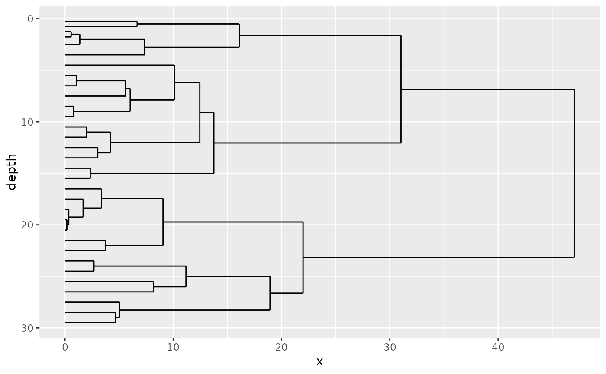

Add a dendrogram as a layer or facet
layer_dendrogram(
object,
mapping,
...,
colour = "black",
size = 0.5,
linetype = 1,
alpha = NA,
sequential_facets = TRUE
)
plot_layer_dendrogram(object, mapping, ..., panel_label = "CONISS")
layer_zone_boundaries(
object,
mapping,
...,
linetype = 2,
alpha = 0.7,
colour = "black",
size = 0.5
)A nested_hclust object.
Map at least one axis (x or y) to a qualifier, like aes(x = depth) or similar.
Use facet_var = "CONISS" or similar to name the panel
Customize the apperance of boundary/dendrogram segment lines
TRUE will result in the panel containing the dendrogram added to the right of the plot.
Use to label a pane on a stanalone dendrogram plot
library(ggplot2)
library(dplyr, warn.conflicts = FALSE)
alta_coniss <- nested_data(
alta_lake_geochem,
qualifiers = c(age, depth, zone),
key = param,
value = value,
trans = scale
) %>%
nested_chclust_coniss()
ggplot() +
layer_dendrogram(alta_coniss, aes(y = depth)) +
scale_y_reverse()
#> Warning: Using `size` aesthetic for lines was deprecated in ggplot2 3.4.0.
#> ℹ Please use `linewidth` instead.
#> ℹ The deprecated feature was likely used in the tidypaleo package.
#> Please report the issue at <https://github.com/paleolimbot/tidypaleo/issues>.
